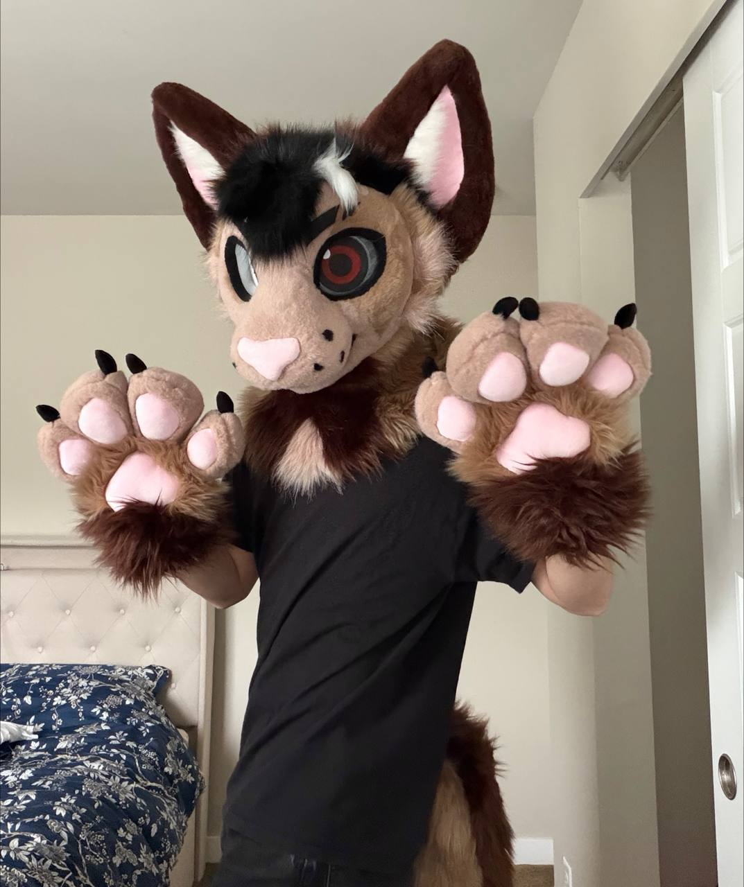
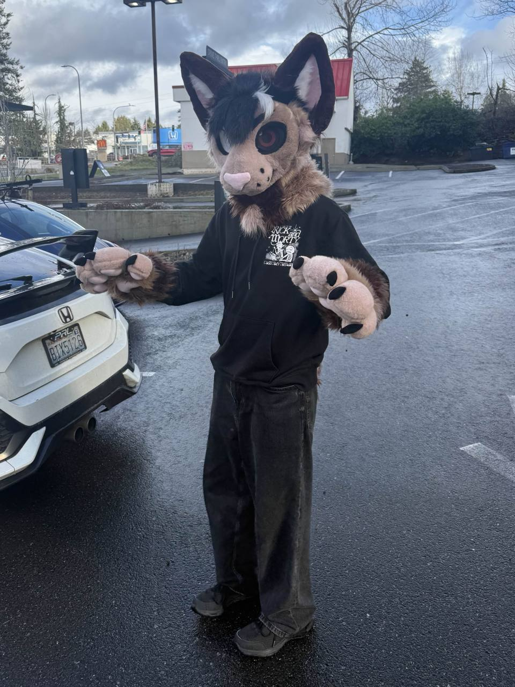
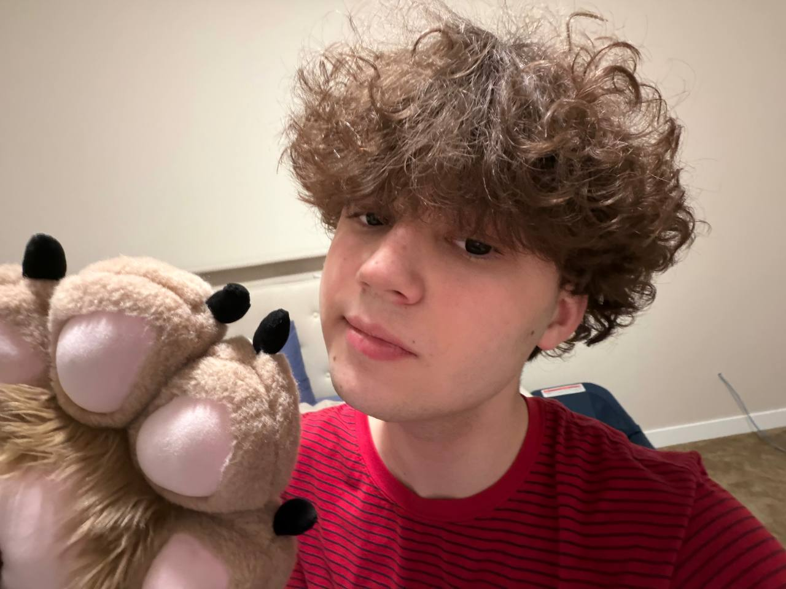

Character-forward
The suit is the center of the identity: strong eye design, clean posing, and a style that reads immediately on camera.
Public suiting furry
KeetSilco is a furry creator who brings a Silco-inspired character to life through public suiting videos and street-style content.

About the look
This character takes the attitude and silhouette of Silco inspiration and pushes it into public suiting, expressive posing, and short-form content built to feel dramatic without losing the soft, approachable side of the suit.
The suit is the center of the identity: strong eye design, clean posing, and a style that reads immediately on camera.
The content focuses on being out in real spaces, creating reactions, presence, and movement that feel alive outside a studio setup.
The site leans into glossy pinks, soft light, and sharper framing so the visuals match the mood of the character and edits.
What you will see
A quick intro to the edits, mood, and overall energy behind the account.
Outside, in character, and fully in the public-suiting lane.

Yep, that's my face :3

"
Swaga eshkeree sigma gyatt rizz idk what else.
Follow the account
If you like furry performance, public suiting, and a Silco-inspired character, this is the place to keep up with new clips and updates.